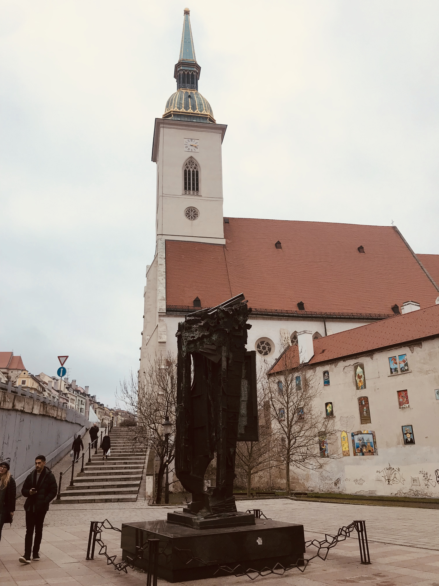
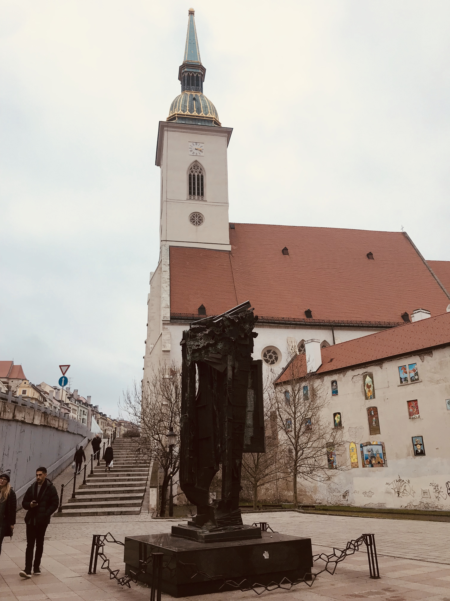

Do domu, kde láska byva, slniečko sa rado diva.
I was here from January 7 - 8, 2018
Slovakia's capital, Bratislava, is a quaint and interesting place with something to offer everyone.
This stunning city, which is situated on the banks of the Danube River, combines old-world charm with contemporary refinement.
Bratislava is a sanctuary for history fans and architecture enthusiasts with its magnificent medieval old town.
The city's numerous historic sites, including the Bratislava Castle,
St. Martin's Cathedral, and the Michael's Gate, the sole remaining gate from the city's medieval walls, can be explored by tourists.
In addition to its importance in politics and industry, Brussels is renowned for its delectable cuisine,
particularly its world-famous Belgian waffles, chocolate, and beer.
For those who enjoy the great outdoors, Bratislava has a ton of chances. Beautiful scenery surrounds the city.
The surrounding Carpathian Mountains are a great place to go hiking, biking, and engaging in other outdoor pursuits.
Bratislava Castle
Devin Castle
Micheal's Gate
Slovak Cuisine
Most Slovenského Národného Povstania
SOLO European trip in 2018
Dead tired from walking all around the city
My love for this city goes here↓↓↓
 
